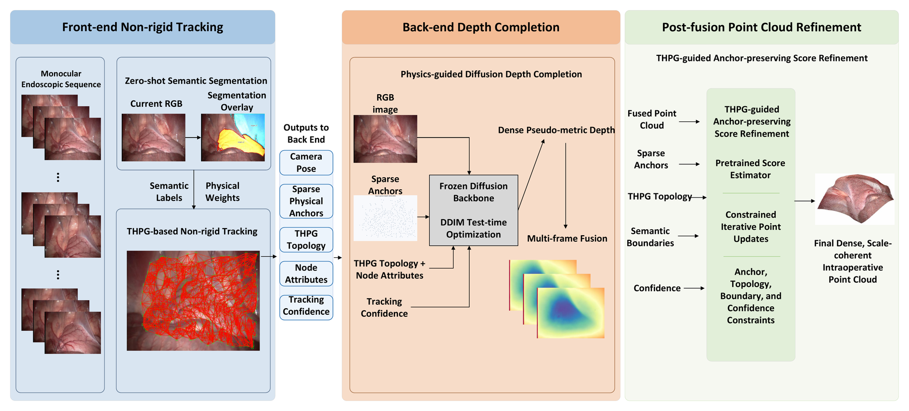
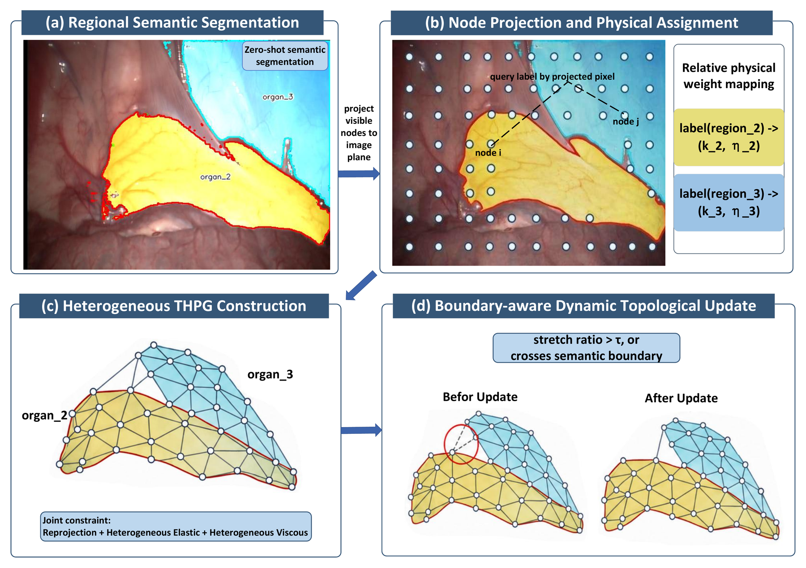
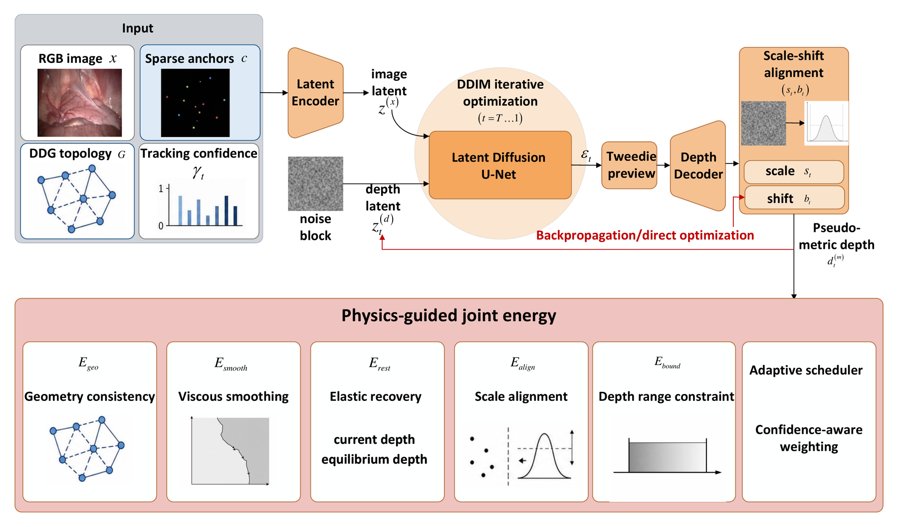
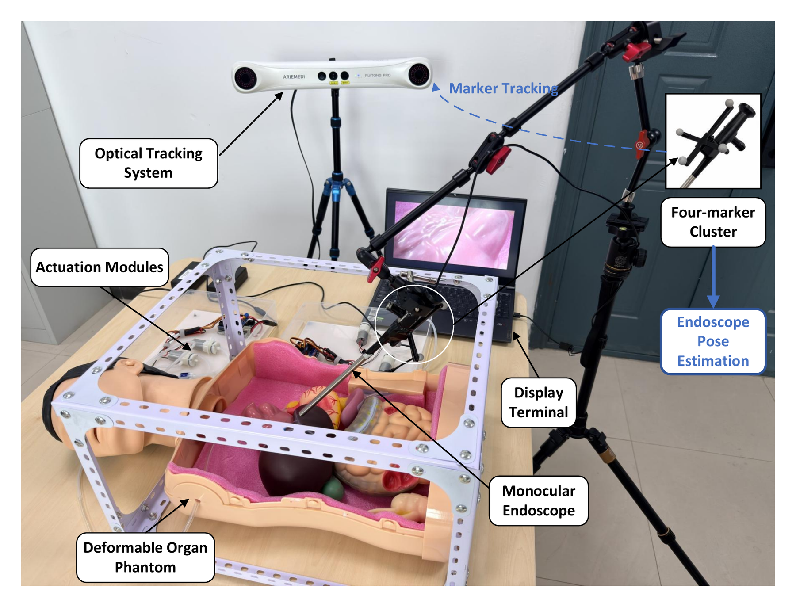
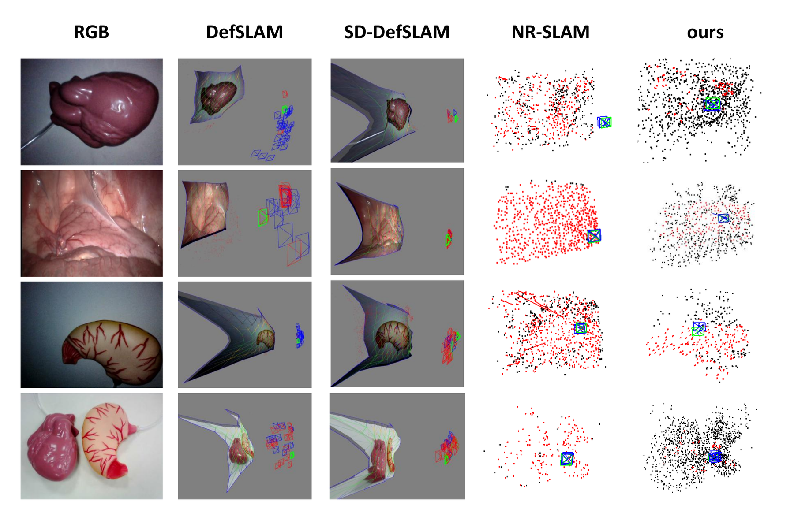
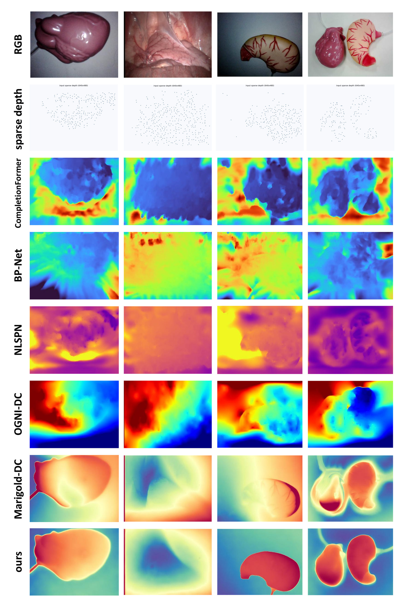

Overview
Minimally invasive surgery requires reliable intraoperative geometry for image-guided applications, but monocular endoscopic reconstruction is difficult because soft tissue undergoes continuous non-rigid deformation. Sparse SLAM maps can support tracking, yet they usually provide limited surface coverage. Dense depth completion can improve coverage, but per-frame dense predictions may introduce scale-and-shift mismatch and cross-frame geometric inconsistency.
This project addresses dense and scale-consistent intraoperative point-cloud generation. The front end estimates tissue-aware heterogeneous physical priors using a physical graph representation, and the back end propagates these priors into diffusion-based depth completion during test-time optimization.
THPG front end
Maps coarse tissue-region priors to node-level elastic and viscous weights for deformation-aware tracking.
Physics-guided back end
Injects sparse anchors, graph topology, physical attributes, and tracking states into dense depth completion.
Scale-consistent fusion
Generates denser intraoperative point clouds while preserving sparse-anchor alignment and local topology.
Method



Experimental Platform and Data
Experiments use public endoscopic datasets and a self-collected deformable organ phantom platform. The self-collected setup includes a deformable organ phantom, a monocular endoscope, actuation modules, a display terminal, and an optical tracking system for auxiliary pose evaluation only.
The optical tracking system is not used as a depth sensor and is not an input to the monocular reconstruction method. It only provides reference pose information for evaluating tracking stability under controllable deformation.

Results
Front-end tracking on Hamlyn
| Sequence | NR-SLAM RMSE | Ours RMSE |
|---|---|---|
| abdominal-seq-6 | 2.37 mm | 1.66 mm |
| exploration-seq-20 | 1.09 mm | 0.76 mm |
| liver-seq-21 | 0.59 mm | 0.42 mm |
Dense depth completion
| Dataset | Marigold-DC RMSE | Ours RMSE |
|---|---|---|
| Hamlyn exp.-seq-20 | 2.94 | 2.31 |
| SCARED D1 Seq2 | 3.47 | 2.76 |


Video Demo
The original video files are not included because they are large. Put demo videos into docs/assets/videos/ and update the file names in this section when the repository is ready.
overview_demo.mp4, tracking_demo.mp4, dense_reconstruction_demo.mp4
Resources
Citation
Replace the author and venue fields after the paper information is finalized.
@article{author2026monocular,
title={Monocular Non-rigid Endoscopic 3D Reconstruction with Tissue-aware Heterogeneous Physical Priors},
author={Author Name},
journal={Under review},
year={2026}
}